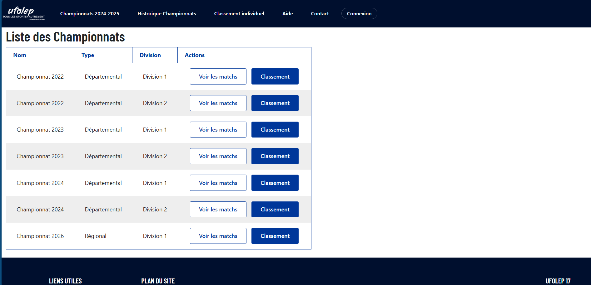

Présentation du Site Ufolep 17 Laravel

Introduction
Ce site a été développer avec le Framework Laravel, il permet de suivre les différents championnats dans la région de la Charente-Maritime. C'est un site gestion de championnat sportif, il permet de gérer les utilisateurs, les clubs, les équipes, les matchs, les championnats. Il permet également de suivre les matchs, les résultats, les classements ainsi qu'un accès a un classement individuel des joueurs qui se met a jour 2 fois dans l'année.
Fonctionnalités
- Authentification et gestion des utilisateurs
- CRUD (Create, Read, Update, Delete)
- Gestion des équipes
- Gestion des migrations et des bases de données
- Classement des joueurs
- Gestion des feuilles de matchs
- Accès Invité (Guest) :
- Listes des Championnats : championnats en cours et historique
- Détails des Matchs : feuilles de match détaillées
- Classements : classement individuel et détails des joueurs
- Aide : vidéos explicatives
- Formulaire de Contact : possibilité de contacter les administrateurs
- Connexion : accès à un compte existant
- Accès Administrateur (Admin) :
- Tableau de Bord : gestion des championnats, rencontres et classements
- Gestion des Matchs : création, saisie des feuilles de match, calcul des scores
- Gestion des Championnats : création, attribution des matchs aux journées
- Gestion des Équipes : création, modification, ajout de joueurs
- Gestion des Personnes : création, modification, suppression
- Gestion des Utilisateurs : création, modification, suppression
- Gestion des Joueurs : création, modification, simulation et calcul des classements
- Aide : ajout, modification et suppression de vidéos d'aide
- Mon Compte : modification du nom d'utilisateur et mot de passe
Technologies Utilisées
Le site utilise les technologies suivantes :
- Laravel
- PHP
- MySQL
- JavaScript
- HTML & Boostrap